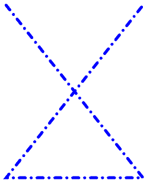

Dots and Dashes in SkiaSharp
Master the intricacies of drawing dotted and dashed lines in SkiaSharp
SkiaSharp lets you draw lines that are not solid but instead are composed of dots and dashes:

You do this with a path effect, which is an instance of the SKPathEffect class that you set to the PathEffect property of SKPaint. You can create a path effect (or combine path effects) using one of the static creation methods defined by SKPathEffect. (SKPathEffect is one of six effects supported by SkiaSharp; the others are described in the section SkiaSharp Effect.)
To draw dotted or dashed lines, you use the SKPathEffect.CreateDash static method. There are two arguments: This first is an array of float values that indicate the lengths of the dots and dashes and the length of the spaces between them. This array must have an even number of elements, and there should be at least two elements. (There can be zero elements in the array but that results in a solid line.) If there are two elements, the first is the length of a dot or dash, and the second is the length of the gap before the next dot or dash. If there are more than two elements, then they are in this order: dash length, gap length, dash length, gap length, and so on.
Generally, you'll want to make the dash and gap lengths a multiple of the stroke width. If the stroke width is 10 pixels, for example, then the array { 10, 10 } will draw a dotted line where the dots and gaps are the same length as the stroke thickness.
However, the StrokeCap setting of the SKPaint object also affects these dots and dashes. As you'll see shortly, that has an impact on the elements of this array.
Dotted and dashed lines are demonstrated on the Dots and Dashes page. The DotsAndDashesPage.xaml file instantiates two Picker views, one for letting you select a stroke cap and the second to select a dash array:
<ContentPage xmlns="http://xamarin.com/schemas/2014/forms"
xmlns:x="http://schemas.microsoft.com/winfx/2009/xaml"
xmlns:skia="clr-namespace:SkiaSharp;assembly=SkiaSharp"
xmlns:skiaforms="clr-namespace:SkiaSharp.Views.Forms;assembly=SkiaSharp.Views.Forms"
x:Class="SkiaSharpFormsDemos.Paths.DotsAndDashesPage"
Title="Dots and Dashes">
<Grid>
<Grid.RowDefinitions>
<RowDefinition Height="Auto" />
<RowDefinition Height="*" />
</Grid.RowDefinitions>
<Grid.ColumnDefinitions>
<ColumnDefinition Width="*" />
<ColumnDefinition Width="*" />
</Grid.ColumnDefinitions>
<Picker x:Name="strokeCapPicker"
Title="Stroke Cap"
Grid.Row="0"
Grid.Column="0"
SelectedIndexChanged="OnPickerSelectedIndexChanged">
<Picker.ItemsSource>
<x:Array Type="{x:Type skia:SKStrokeCap}">
<x:Static Member="skia:SKStrokeCap.Butt" />
<x:Static Member="skia:SKStrokeCap.Round" />
<x:Static Member="skia:SKStrokeCap.Square" />
</x:Array>
</Picker.ItemsSource>
<Picker.SelectedIndex>
0
</Picker.SelectedIndex>
</Picker>
<Picker x:Name="dashArrayPicker"
Title="Dash Array"
Grid.Row="0"
Grid.Column="1"
SelectedIndexChanged="OnPickerSelectedIndexChanged">
<Picker.ItemsSource>
<x:Array Type="{x:Type x:String}">
<x:String>10, 10</x:String>
<x:String>30, 10</x:String>
<x:String>10, 10, 30, 10</x:String>
<x:String>0, 20</x:String>
<x:String>20, 20</x:String>
<x:String>0, 20, 20, 20</x:String>
</x:Array>
</Picker.ItemsSource>
<Picker.SelectedIndex>
0
</Picker.SelectedIndex>
</Picker>
<skiaforms:SKCanvasView x:Name="canvasView"
PaintSurface="OnCanvasViewPaintSurface"
Grid.Row="1"
Grid.Column="0"
Grid.ColumnSpan="2" />
</Grid>
</ContentPage>
The first three items in the dashArrayPicker assume that the stroke width is 10 pixels. The { 10, 10 } array is for a dotted line, { 30, 10 } is for a dashed line, and { 10, 10, 30, 10 } is for a dot-and-dash line. (The other three will be discussed shortly.)
The DotsAndDashesPage code-behind file contains the PaintSurface event handler and a couple of helper routines for accessing the Picker views:
void OnCanvasViewPaintSurface(object sender, SKPaintSurfaceEventArgs args)
{
SKImageInfo info = args.Info;
SKSurface surface = args.Surface;
SKCanvas canvas = surface.Canvas;
canvas.Clear();
SKPaint paint = new SKPaint
{
Style = SKPaintStyle.Stroke,
Color = SKColors.Blue,
StrokeWidth = 10,
StrokeCap = (SKStrokeCap)strokeCapPicker.SelectedItem,
PathEffect = SKPathEffect.CreateDash(GetPickerArray(dashArrayPicker), 20)
};
SKPath path = new SKPath();
path.MoveTo(0.2f * info.Width, 0.2f * info.Height);
path.LineTo(0.8f * info.Width, 0.8f * info.Height);
path.LineTo(0.2f * info.Width, 0.8f * info.Height);
path.LineTo(0.8f * info.Width, 0.2f * info.Height);
canvas.DrawPath(path, paint);
}
float[] GetPickerArray(Picker picker)
{
if (picker.SelectedIndex == -1)
{
return new float[0];
}
string str = (string)picker.SelectedItem;
string[] strs = str.Split(new char[] { ' ', ',' }, StringSplitOptions.RemoveEmptyEntries);
float[] array = new float[strs.Length];
for (int i = 0; i < strs.Length; i++)
{
array[i] = Convert.ToSingle(strs[i]);
}
return array;
}
In the following screenshots, the iOS screen on the far left shows a dotted line:
{kind=link}
However, the Android screen is also supposed to show a dotted line using the array { 10, 10 } but instead the line is solid. What happened? The problem is that the Android screen also has a stroke caps setting of Square. This extends all the dashes by half the stroke width, causing them to fill up the gaps.
To get around this problem when using a stroke cap of Square or Round, you must decrease the dash lengths in the array by the stroke length (sometimes resulting in a dash length of 0), and increase the gap lengths by the stroke length. This is how the final three dash arrays in the Picker in the XAML file were calculated:
- { 10, 10 } becomes { 0, 20 } for a dotted line
- { 30, 10 } becomes { 20, 20 } for a dashed line
- { 10, 10, 30, 10 } becomes { 0, 20, 20, 20} for a dotted and dashed line
The UWP screen shows that dotted and dashed line for a stroke cap of Round. The Round stroke cap often gives the best appearance of dots and dashes in thick lines.
So far no mention has been made of the second parameter to the SKPathEffect.CreateDash method. This parameter is named phase and it refers to an offset within the dot-and-dash pattern for the beginning of the line. For example, if the dash array is { 10, 10 } and the phase is 10, then the line begins with a gap rather than a dot.
One interesting application of the phase parameter is in an animation. The Animated Spiral page is similar to the Archimedean Spiral page, except that the AnimatedSpiralPage class animates the phase parameter using the Xamarin.Forms Device.Timer method:
public class AnimatedSpiralPage : ContentPage
{
const double cycleTime = 250; // in milliseconds
SKCanvasView canvasView;
Stopwatch stopwatch = new Stopwatch();
bool pageIsActive;
float dashPhase;
public AnimatedSpiralPage()
{
Title = "Animated Spiral";
canvasView = new SKCanvasView();
canvasView.PaintSurface += OnCanvasViewPaintSurface;
Content = canvasView;
}
protected override void OnAppearing()
{
base.OnAppearing();
pageIsActive = true;
stopwatch.Start();
Device.StartTimer(TimeSpan.FromMilliseconds(33), () =>
{
double t = stopwatch.Elapsed.TotalMilliseconds % cycleTime / cycleTime;
dashPhase = (float)(10 * t);
canvasView.InvalidateSurface();
if (!pageIsActive)
{
stopwatch.Stop();
}
return pageIsActive;
});
}
···
}
Of course, you'll have to actually run the program to see the animation: